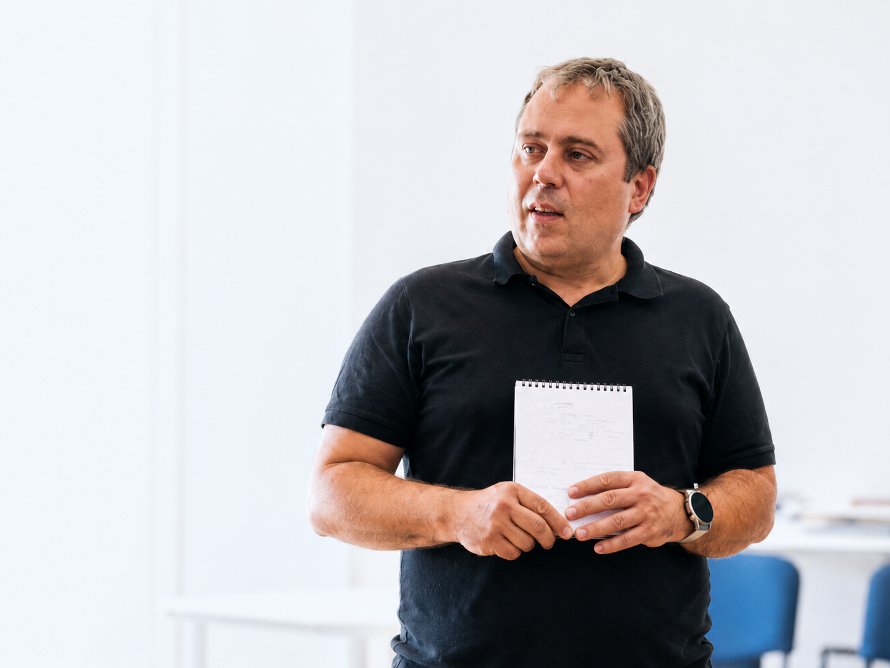

O Ivanu Žujoviću
Sistemski savetnik. Individualni i grupni rad sa ljudima koji nose odgovornost, ali se iznutra vraćaju na ista mesta u odlukama, odnosima, granicama i ulogama.

Na mestu gde obrazac tek postaje vidljiv.
U fokusu nisu samo pojedinačni simptomi situacije, već odnosi, uloge, lojalnosti, preuzete odgovornosti i ponavljajuće dinamike u kojima osoba gubi pokret ili izbor.
Preciznija slika pre sledećeg koraka.
Ne radi se o brzom objašnjenju niti o savetu koji privremeno umiri situaciju. Gleda se šta se ponavlja, gde se odluka zaustavlja, šta osoba nosi i koju cenu trenutni obrazac ima.
Jasne granice, poverljivost i odgovornost.
Učešće je dobrovoljno. U radu se ne daju dijagnoze, pravni, finansijski ni zdravstveni saveti. Kada je potreban drugi oblik stručne podrške, on ne zamenjuje rad koji se ovde nudi.
Metod služi temi, ne obrnuto.
U radu koristi sistemske i porodične konstelacije, IoPT-informed pristup i NLP — kao različite načine da se konkretna situacija pogleda preciznije.
- Sertifikovani sistemski savetnikIndividualni i grupni rad u sistemskom okviru.
- NLP Master PractitionerRad sa obrascima, jezikom, odlukama i unutrašnjim konfliktima.
- IoPT-informed PractitionerPristup koji uzima u obzir iskustvo, granice i ritam osobe.
Stvarna praksa, miran prostor i jasan okvir.
Individualni susreti i radionice održavaju se u Beogradu, u prostoru namenjenom mirnom individualnom i grupnom radu. Individualni rad može biti i online, kada je to primereno temi i formatu rada.
Grupni rad, 1:1 i ulazno sistemsko mapiranje.
Format se ne bira po unapred zadatoj formuli, nego prema temi, potrebi za privatnošću i trenutku u kojem se osoba nalazi.
Pre rada je važno znati okvir.
Pravila poverljivosti, dobrovoljnosti i odnosa prema grupi nisu fusnota. Ona čuvaju prostor da se radi odgovorno i bez pritiska.